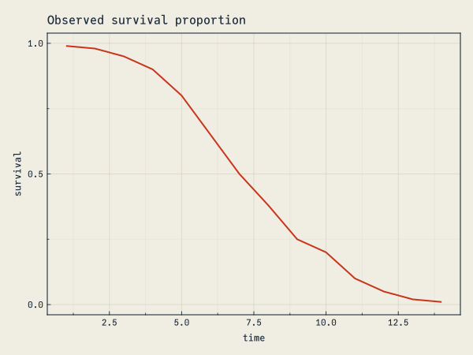
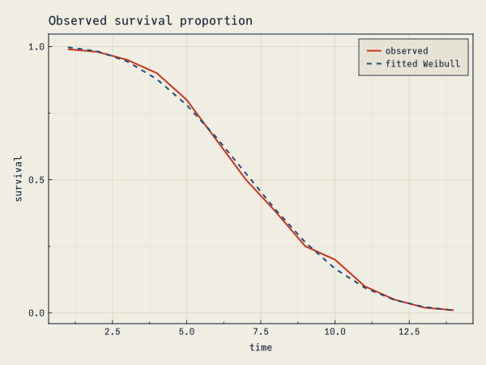
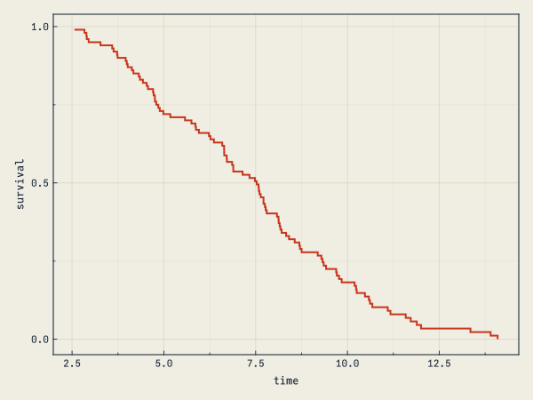
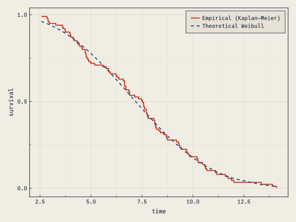

begin
using LsqFit
using MortalityTables
using CairoMakie
using Distributions
using Optim
using DataFrames
using Survival
end
include(joinpath(@__DIR__, "..", "..", "assets", "themes", "cassette_futurism.jl"))
set_theme!(cassette_futurism_theme())This tutorial is via PharmCat on Github (this link has similar code with comments in Russian and English).
Fitting a Weibull survival curve
Sample data:
data = let
survival = [0.99, 0.98, 0.95, 0.9, 0.8, 0.65, 0.5, 0.38, 0.25, 0.2, 0.1, 0.05, 0.02, 0.01]
times = 1:length(survival)
DataFrame(; times, survival)
end14×2 DataFrame
| Row | times | survival |
|---|---|---|
| Int64 | Float64 | |
| 1 | 1 | 0.99 |
| 2 | 2 | 0.98 |
| 3 | 3 | 0.95 |
| 4 | 4 | 0.9 |
| 5 | 5 | 0.8 |
| 6 | 6 | 0.65 |
| 7 | 7 | 0.5 |
| 8 | 8 | 0.38 |
| 9 | 9 | 0.25 |
| 10 | 10 | 0.2 |
| 11 | 11 | 0.1 |
| 12 | 12 | 0.05 |
| 13 | 13 | 0.02 |
| 14 | 14 | 0.01 |
Visualizing the data:
plt = Figure(); ax = Axis(plt[1,1]; xlabel="time", ylabel="survival",
title="Observed survival proportion")
lines!(ax, data.times, data.survival;
label="observed", color=CASSETTE_PALETTE[1], linewidth=2)
plt
Define the two-parameter Weibull model:
x: array of independent variablesp: array of model parameters
model(x, p) will accept the full data set as the first argument x. This means that we need to write our model function so it applies the model to the full dataset. We use @. to apply (“broadcast”) the calculations across all rows.
@. model1(x, p) = survival(MortalityTables.Weibull(; m=p[1], σ=p[2]), x)model1 (generic function with 1 method)Fitting the Model
And fit the model with LsqFit.jl:
fit1 = curve_fit(model1, data.times, data.survival, [1.0, 1.0])
lines!(ax, data.times, model1(data.times, fit1.param);
label="fitted Weibull", color=CASSETTE_PALETTE[2], linewidth=2, linestyle=:dash)
axislegend(ax, position=:rt)
plt
Maximum Likelihood estimation
Generate 100 sample datapoints:
t = rand(Weibull(fit1.param[2], fit1.param[1]), 100)100-element Vector{Float64}:
5.861961403313465
11.888125688001178
6.327083786718294
8.70693035997539
7.602651313753518
8.15348212482864
10.095004066320902
6.3642823231725085
8.715216131746105
4.170061614784922
⋮
10.235937747778024
3.5935729613035723
11.722598382089496
8.121992286428716
14.089688478610189
5.576118865264992
3.7253155497083332
2.9516616043274806
8.688805246364376Without Censored Data”
#No censored data
fit_mle(Weibull, t)Distributions.Weibull{Float64}(α=2.967209124932327, θ=8.149553138772609)With Censored Data
Pick some arbitrary observations to censor:
c = collect(trues(100))
c[[1, 3, 7, 9]] .= false4-element view(::Vector{Bool}, [1, 3, 7, 9]) with eltype Bool:
0
0
0
0#ML function
survmle(x) = begin
ml = 0.0
for i = 1:length(t)
if c[i]
ml += logpdf(Weibull(x[2], x[1]), t[i]) #if not censored log(f(x))
else
ml += logccdf(Weibull(x[2], x[1]), t[i]) #if censored log(1-F)
end
end
-ml
end
opt = Optim.optimize(
survmle, # function to optimize
[1.0, 1.0], # lower bound
[15.0, 15.0], # upper bound
[3.0, 3.0] # initial guess
) * Status: success
* Candidate solution
Final objective value: 2.335854e+02
* Found with
Algorithm: Fminbox with L-BFGS
* Convergence measures
|x - x'| = 8.21e-08 ≰ 0.0e+00
|x - x'|/|x'| = 9.95e-09 ≰ 0.0e+00
|f(x) - f(x')| = 0.00e+00 ≤ 0.0e+00
|f(x) - f(x')|/|f(x')| = 0.00e+00 ≤ 0.0e+00
|g(x)| = 1.60e-09 ≤ 1.0e-08
* Work counters
Seconds run: 1 (vs limit Inf)
Iterations: 4
f(x) calls: 35
∇f(x) calls: 35
∇f(x)ᵀv calls: 0The solution converges to similar values as the function generating the synthetic data:
Optim.minimizer(opt)2-element Vector{Float64}:
8.253145299392791
2.942260672059159Fitting Kaplan Meier
KaplanMeier comes from Survival.jl.
#t- time vector;c - censored events vector
km = fit(Survival.KaplanMeier, t, c)
plt2 = Figure(); ax2 = Axis(plt2[1,1]; xlabel="time", ylabel="survival")
stairs!(ax2, km.events.time, km.survival;
label="Empirical (Kaplan–Meier)", color=CASSETTE_PALETTE[1], step=:post, linewidth=2)
plt2
@. model(x, p) = survival(MortalityTables.Weibull(; m=p[1], σ=p[2]), x)
mfit = LsqFit.curve_fit(model, km.events.time, km.survival, [2.0, 2.0])
lines!(ax2, km.events.time, model(km.events.time, mfit.param);
label="Theoretical Weibull", color=CASSETTE_PALETTE[2], linewidth=2, linestyle=:dash)
axislegend(ax2, position=:rt)
plt2